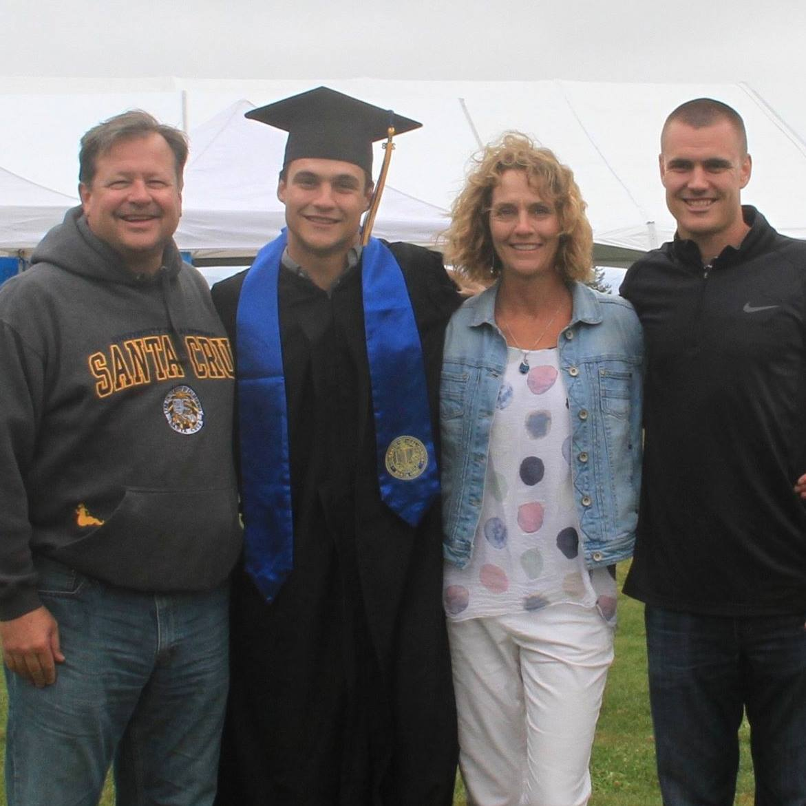
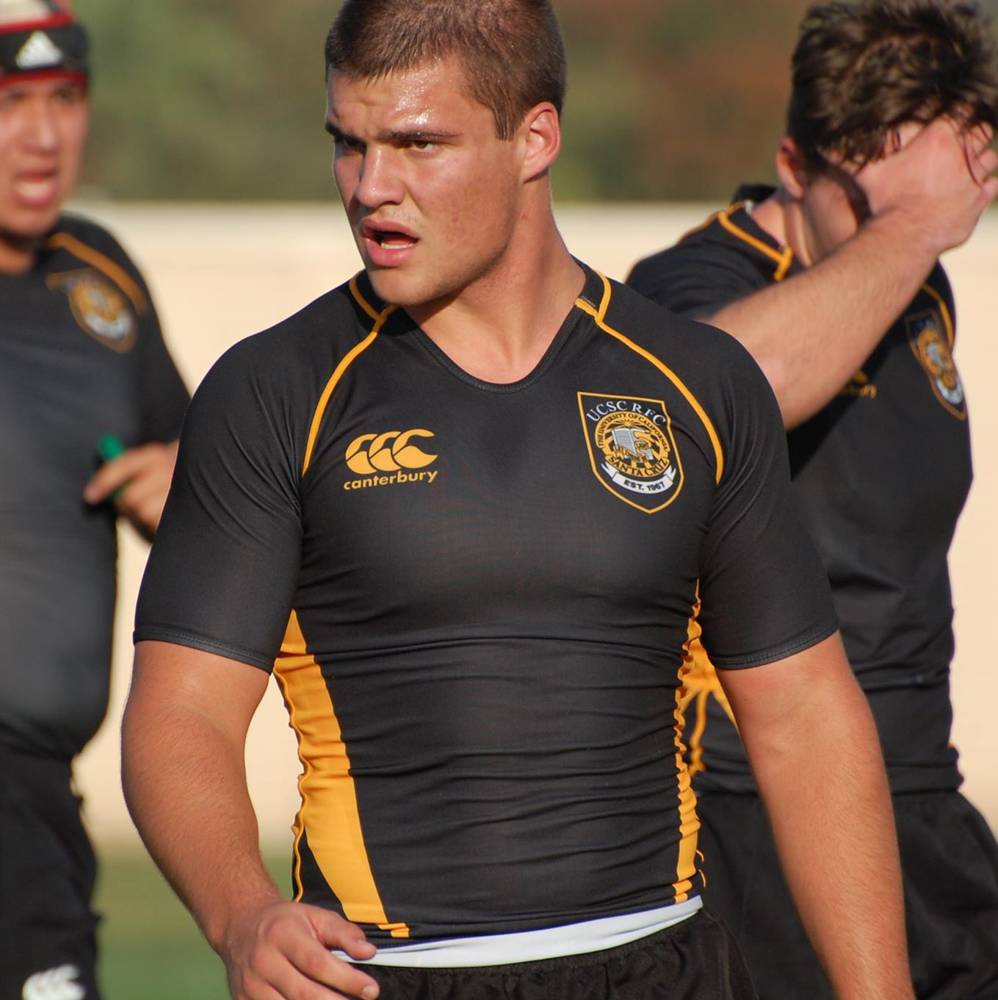

About Me!
Hi I'm Nathan! I am a recent graduate of the University of California Santa Cruz. I graduated with an undergraduate degree in Computer Science. During my time at UCSC I pursued many interests and invested my time in many things revolving both around school and outside interests. As a full time student that graduated in four years I divided my time between shcool, playing for the UCSC Men's Rugby Team, working part time up to twenty hours a week, and for three of the years participated on the rugby teams executive committee. By the end of my senior year I was recognized for my hard work by my team when they voted me President and Co-Captain of our team.
To get a little more into who I am personally, I'll let you in on a few of my main interests outside of the things that I go do in my day to day. I have always been I huge Lord of the Rings fan, read the books, watched the movies many times, and even own a ring necklace I sometimes wear. I've even seen the movies enough times to quote the soun effects. Secondary to this, but only slightly, I am also a big Star Wars dork. Still not sure how I feel about Disney taking over the Star Wars franchise but I am glad they finally have the money to release new content(if you ever followed the LucasArts video game franchise you know what I'm talking about.) Unfortunately this came at the cost of discrediting thousands of years of Star Wars lore but I digress. Outside of this, I enjoy a good video game(I'm an RPG man), play piano, volunteer for several fundraising 5k/10k races throughout the year, and love playing pickup sports whenever I can.
Schooling
Computer Science Courses
| Course | Course Title |
|---|---|
| CMPS-12A | Introduction to Programming(Accelerated) |
| CMPS-12B | Introduction to Data Structures |
| CMPS-101 | Algorithms and Abstract Data Types |
| CMPS-102 | Introduction to Analysis of Algorithms |
| CMPS-104A | Fundementals of Compiler Design |
| CMPS-112 | Comparative Programming Languages |
| CMPS-115 | Introduction to Software Engineering |
| CMPS-130 | Computational Models |
| CMPS-165 | Data Programming for Visualization |
| CMPS-183 | Web Applications |
| Course | Course Title |
|---|---|
| CMPE-12 | Computer Systems and Assembly Language |
| CMPE-16 | Applied Discrete Mathematics |
| CMPE-107 | Probability and Statistics for Engineers |
| CMPE-110 | Computer Architecture |
Mathematics Courses
| Course | Course Title |
|---|---|
| MATH-19A | Calculus for Science and Engineering 1 |
| MATH-19B | Calculus for Science and Engineering 2 |
| MATH-23A | Vector Calculus 1 |
| MATH-23B | Vector Calculus 2 |
| AMS-10 | Math Methods for Engineers 1 (Linear Algebra) |
| AMS-20 | Math Methods for Engineers 2 (Linear Algebra) |
| Course | Course Title |
|---|---|
| ASTR-6 | Space Age Solar System |
| EE-80T | Modern Electronic Technology |
| PHIL-22 | Ethical Theory |
| CRSN-20G | Peregrine Falcons |
Work Experience
Rugby
During my time at School I played for four years on the Men's Rugby Team, go Slugs! If you aren't familiar with rugby you should become familiar with it because it a great sport to both watch and play. It's a fast paced sport with constant hitting and strategy. This makes it a great sport for both an intellectual aspect while at the same time having a hard-working and hard-hitting mentality. My coaches recognized these traits in me early on and put me as flanker because they believed my constant hard work and fast pace could put me in great support and defensive positions. They weren't wrong. By the end of my Freshman year I was one of our starting flankers due to a few injuries that took place on our team. After this they had me playing ever since.
Coming into college I had no previous experience playing or even watching rugby, it was a big learning curve to get up to the level of play to compete with teams like Stanford, Sac State and Chico State but it was a fun challenge to tackle. Thankfully I had some great coaches to bring me up in the world of rugby. It was a long road but I watched myself grow with every experience I had with the game. Through commitment and constant effort I was able to become a good rugby player in time. This commitment and effort was seen by my teammates throughout the years on the team and was recognized my Senior year when they voted me to be the forwards captain of our team.
Aside from the on field aspects I was able to help my team in other ways. Starting my Sophomore year I was voted onto our teams executive committee to help manage our clubs endeavors and operations. Sophomore year I became the clubs Secretary where I managed the teams communication and a large portion of the paperwork and records such as attendance and contact lists. My Junior year I became the Vice President. My duties here were to handle the logistical aspects of the club including itinerary for travel. Alongside of this it was my job to assist the president with any job that needed to be done that he could not handle. Finally my Senior year I became president where my main priority was communication on the clubs behalf and to organize the committee so that all jobs and requirements were handled, and to help those people if needed.